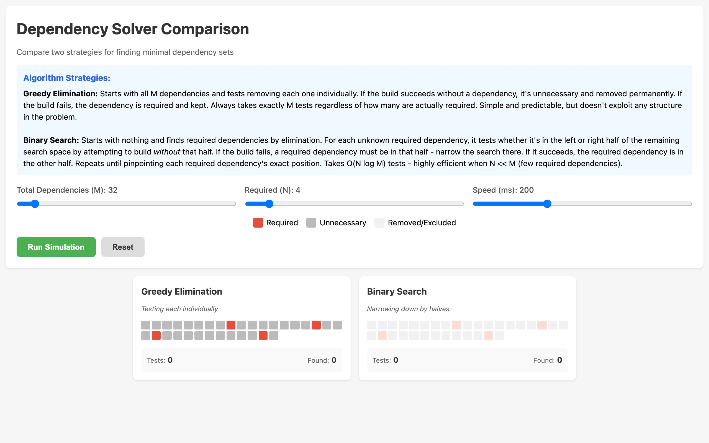

Imagine you're building a project and it has 100 declared dependencies, but only a handful are actually required. The rest are leftovers from features that got removed, or transitive dependencies that something else already pulls in. You want to find the minimal set. The only test you can perform is: "does the build succeed with this subset of dependencies?" Each test takes time. How do you minimize the number of tests?
The problem, formally
A dependency graph is a directed acyclic graph \(G = (V, E)\) where each vertex \(v \in V\) is a package and an edge \((u, v) \in E\) means \(u\) depends on \(v\). A valid build requires a subset \(S \subseteq V\) that is downward closed: if \(v \in S\) and \((v, w) \in E\), then \(w \in S\). The build order is any topological sort of the induced subgraph \(G[S]\). A topological sort of a DAG with \(|V| = n\) and \(|E| = m\) can be computed in \(\Theta(n + m)\) time via Kahn's algorithm or depth-first search.
But finding the right \(S\) is harder than sorting it. In real package managers, each dependency carries version constraints: package \(A\) might require \(B \geq 2.0\) while package \(C\) requires \(B < 3.0\). The dependency resolution problem becomes: given a set of packages each with version ranges, find an assignment \(\sigma : V \to \mathbb{N}\) of concrete versions such that every constraint is satisfied simultaneously. This is a constraint satisfaction problem (CSP), and when constraints allow disjunctions (as they do in most real ecosystems), it reduces to Boolean satisfiability.
Specifically, the version solving problem is NP-complete. Cox (2016) showed this by reduction from 3-SAT: each Boolean variable maps to a package with two versions (true/false), and each clause becomes a dependency that requires at least one of its literals to be satisfied. The formal result is:
\[ \text{Dep-Resolve} = \bigl\{\langle P, C \rangle \;:\; \exists\, \sigma,\;\; \sigma \models C \bigr\} \;\;\in\;\; \textbf{NP-complete} \]This is why modern solvers like pubgrub (used by Cargo and uv) and libsolv (used by conda) are essentially SAT solvers with domain-specific heuristics. They use techniques from the SAT literature: unit propagation (if a constraint forces a single version, assign it immediately), conflict-driven clause learning (when a dead end is reached, analyze the conflict to derive a new constraint that prunes future search), and backjumping (skip over irrelevant decision levels during backtracking). These are the same ideas behind DPLL and CDCL solvers.
The tool on this page sidesteps version constraints entirely and asks a simpler question: given a fixed build, which of the \(M\) declared dependencies are actually needed? The build is a black-box oracle \(f : 2^V \to \{0, 1\}\) that returns 1 if a subset builds successfully and 0 otherwise. We assume monotonicity: if \(S\) builds and \(S \subseteq T\), then \(T\) builds. Under this assumption, the required set \(R \subseteq V\) with \(|R| = N\) is unique, and we want to identify it with as few oracle calls as possible.

{kind=link}
This tool lets you set up that exact scenario and watch two different algorithms race to find the answer. You configure the total number of dependencies, how many are truly required, and the animation speed. Then you hit run and watch both algorithms work through the problem side by side, step by step.
Greedy elimination
The first algorithm is the obvious one. Start with all dependencies included. Remove one. Try the build. If it succeeds, that dependency wasn't needed, so leave it out permanently. If it fails, put it back. Move on to the next one. This always takes exactly \(M\) tests, where \(M\) is the total number of dependencies. It doesn't matter how many are required. You test every single one.
More precisely, let \(V = \{d_1, d_2, \ldots, d_M\}\). At step \(i\), we test \(V \setminus \{d_i\}\). If \(f(V \setminus \{d_i\}) = 1\), we set \(V \leftarrow V \setminus \{d_i\}\). The algorithm performs exactly \(M\) oracle calls regardless of input, giving worst-case and best-case complexity:
\[ T_{\text{greedy}}(M, N) = M = \Theta(M) \]This is optimal in the sense that any algorithm that tests one dependency at a time needs at least \(M\) tests to certify every element. But it ignores the possibility of eliminating multiple dependencies in a single test.
The visualization shows this as a grid of colored squares. Required dependencies are red, unnecessary ones are gray. As the algorithm progresses, it dims the dependency currently being tested, tries the build, and either removes it (gray stays gray) or keeps it (red stays red). It's methodical and predictable. You know exactly how long it will take before it starts.
Binary search

{kind=link}
The second algorithm is smarter. It starts with an empty set and uses a divide-and-conquer approach. For the pool of unknown dependencies, it splits them in half. It tests whether the build succeeds without the left half. If it does, none of those dependencies are required and the entire left half is eliminated in one test. If it fails, at least one required dependency lives in that half, so it recurses into the left half to find it. The same logic applies to the right half.
The recurrence is familiar. Let \(T(m, n)\) be the number of oracle calls to find \(n\) required dependencies among \(m\) candidates. In the best case (required dependencies are clustered), each split eliminates half the candidates with one test, giving:
\[ T(m, n) \leq 2\,T\!\left(\frac{m}{2}, n'\right) + 1 \quad \text{where } n' \leq n \]This resolves to \(O(N \log_2 M)\) tests in the worst case, where \(N = |R|\) is the number of required dependencies and \(M = |V|\) is the total. Each of the \(N\) required dependencies is located by a binary search costing \(O(\log M)\) tests, with elimination of large unnecessary blocks along the way. The information-theoretic lower bound is \(\Omega(N \log(M/N))\) (since the oracle must distinguish among \(\binom{M}{N}\) possible required sets, and \(\log_2 \binom{M}{N} = \Theta(N \log(M/N))\) by Stirling), so binary search is near-optimal.
When \(N\) is small relative to \(M\) (which is the common case with bloated dependency lists), binary search crushes greedy elimination. With \(M = 100\) total dependencies and \(N = 5\) required ones, greedy needs exactly 100 tests. Binary search might need around 30. The ratio \(N \log_2 M / M\) shrinks as the problem gets sparser.
The visualization
Both algorithms run simultaneously on identical grids. Dependencies being tested get a golden glow. Dependencies that have been classified as required turn red, unnecessary ones turn gray, and untested ones stay dim. Below each grid, a counter shows how many tests have been performed and how many required dependencies have been found so far.
The speed slider controls how fast the animation runs, measured in milliseconds per test. Slow it down and you can follow the logic of each step. Speed it up and you can run dozens of configurations quickly to get an intuitive sense of when binary search wins by a lot versus only a little. (Spoiler: binary search wins by a lot when \(N\) is small. When \(N \to M\), the advantage shrinks because there aren't many dependencies to skip. In the degenerate case \(N = M\), binary search actually performs worse than greedy because it wastes tests on splits that never eliminate anything, while greedy still takes exactly \(M\).)
When both algorithms finish, a results panel highlights the winner in green and shows the final test counts. The whole thing is a single HTML file with no dependencies of its own.
Broader context: SAT and constraint propagation
The oracle model used here is clean, but real dependency resolution is messier. As noted above, the general version-constrained problem is NP-complete, and practical solvers lean heavily on SAT-solving machinery. The connection is direct: a package ecosystem with \(n\) packages, each offering \(k\) versions, maps to a SAT formula with \(O(nk)\) variables and \(O(nk^2)\) clauses encoding mutual exclusion (at most one version per package) and compatibility (if version \(v\) of \(A\) is chosen, then version \(w\) of \(B\) must be chosen).
Constraint propagation techniques like arc consistency reduce the search space before branching. In dependency resolution terms, arc consistency means: for every package \(A\) and every candidate version \(v\) of \(A\), there exists at least one compatible version of every package \(A\) depends on. Versions that fail this check can be pruned. Repeated propagation often resolves most of the graph without backtracking, which is why tools like pip and npm feel fast despite the NP-complete worst case.
The two algorithms compared here live in a simpler world, but they illustrate a principle that carries over: exploiting structure (sparsity of the required set) can yield exponential improvements over brute force. In SAT terms, greedy elimination is like trying every variable assignment one at a time. Binary search is like unit propagation: a single inference step (one oracle call) can fix the values of many variables at once.